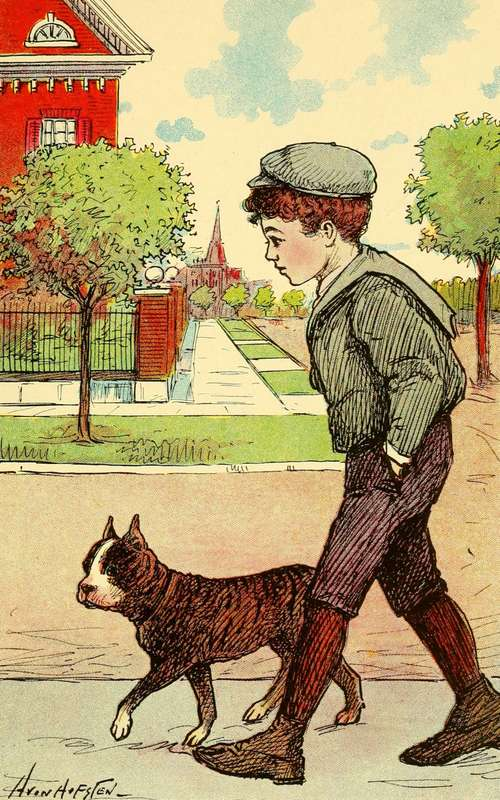
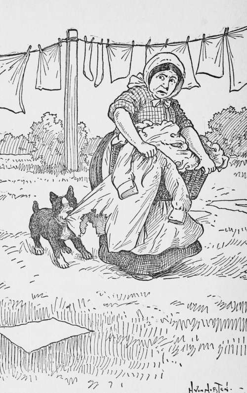

Chapter VI. Beans And The Orphan Boy
Description
This section is from the book "Dogs And Puppies", by Frances Trego Montgomery.
Chapter VI. Beans And The Orphan Boy
The fifth puppy, though not so prettily marked as the other dogs, was a dignified, quiet little dog, that never got into mischief, and was always on hand when he was wanted.
He was first sold to a little boy who did not take very good care of him, and one, who not only forgot to feed him, but thought that a dark basement was a good enough place in which to keep a dog, not knowing that dogs, as well as people, have feelings.
He would put him in the dark basement to sleep, without even an old piece of carpet to lie on. Consequently he got rheumatism from the cold, hard cement floor, and his eyes became weak from being in the dark so much.
So one day when he was in the back yard, a very dishonest man from the slums stole him and took him to his home, which, poor as it was, was better than living with the rich boy, for the man had a very good little son, who was kind to him, and allowed him to share his bed and board, and if he did not always have enough to eat, neither did the little boy, but what ever the boy had, he shared with Beans. Beans is the name they gave him, because of the round marks on his brindle coat that looked like beans.
And so for almost a year Beans lived with Benny and his father. Sometimes they were cold and hungry, but still they were happy with each other.
But one day there came a change, and Beans and Benny were taken to a pleasant new home. You would have known all about it, had you heard Beans telling the story to a friendly dog he met in the alley near the new home. But as you probably were not near, and maybe would not have understood if you had been, I will tell you what Beans said.
"One day the father did not come home, and Benny and I sat at the window and waited until it was quite dark, when we saw two bright lights coming down the miserable street in which we lived.
"YES, SIR, HIM AND ME IS GREAT FRIENDS".
"The lights came nearer and nearer and at last stopped in front of the house. Then came a loud knocking at the door and a policeman asked whether Mr. Stowaway lived there".
"Yes," answered Benny, "but he is not at home".
Then the big policeman looked down at the little pale-faced boy and asked:
"Are you Mr. Stowaway's little boy?" "Yes, sir".
"Where is your mother, my little man?" "She is dead, sir".
"Isn't there any one else at home?" asked the policeman.
"No, sir, I am the only one in the house. All my brothers and sisters are dead, and Beans and I are the only ones here. We are alone most of the time. Won't you come in, sir?"
"No, thank you, well that is, not just at present. I wish to speak to my partner in the wagon".
"It took him a long time to speak to his partner, and before he got back, Benny and I were chilled to the bones. When he came back he said he would stay a little while with us. It seemed hard for him to talk at first and he kept watching my little master closely, and every once in a while he would run his sleeve across his eyes.
"After a while he said, "That's a fine dog you have there!"
"Yes sir, him and me is great friends, and we are together all the time, even when we hide in the box in the alley so the cop can't find us to take me off to school. I went one day, but they would not let me take Beans in and the boys stoned him away from the door. But when I came out, there he was waiting for me. I promised him then that I would never leave him again".
"And you need not, my little man, you may take him with you".
"But I am not going anywhere".
"Oh, I forgot to tell you, I came to invite you to go home with me and see my children, and stay all night, and if you like it, you may stay several days".
"Oh, thank you so much. I could not do that, for what would Father say if he came home and did not find us here?"
"My little man, your father will never come back; he was killed by the cars. I brought him here in the patrol-wagon when I came the first time, but when I found you had no mother or brothers and sisters, I took him to a nice place so the city could bury him. Don't stare at me so child, you make my heart ache for you," said the kind hearted police-man.
"Then Beans and I will have to go and live in the graveyard, for now Father is gone, we won't have any home, for I ain't got no money to pay the rent. I can't earn any, for when I try to get work, every one says:
" 'There, run away, little boy, you are too small to work,' and then they say, 'Where did you steal that dog?' and I am so afraid they will take Beans from me that we hide most of the time".
"Well, if you will come with me, I will take you and Beans to my house, and as long as I have a roof over my head, I will share it with you, and you shall be treated as though you were my own son. When I tell my wife that you are a poor little orphan she will take you to her heart and be kind to you".
"Do you really think she would take a poor, little ragged boy up in her arms and give him a kiss as my mother used to do?"
"Yes, I know she would, you lonely little fellow, and what is more, she will give you all you can eat, a nice warm bath, clean clothes, and a soft bed to sleep in".
"Are you sure she will let me give Beans some of my supper and let him sleep near me? 'Cause if she don't, I can't go." And he said this in a very determined manner.
"Of course she will, you brave little fellow. Now get your hat and come with me, and tomorrow we will come back and get your clothes!"
"I ain't got any to come back for. These on my back are all I have. I never had but two coats, and I cut the back out of the other to make a blanket for Beans".
"And so here we are," added Beans. "And a nice home we have, I can tell you".
"Where is the house," asked the new friend. "Over there on the corner? I thought that was where you came out of".
"Yes," answered Beans. "That little cottage with the large yard. This afternoon Benny and the other boys played at making snow-men. Benny told me that it was the first time he had ever seen that much ground".
"Never seen that much ground!" said his friend. "How was that?"
"Why you see he has always lived in a tenement, where they don't have any room for yards.
IT IS A DOG'S NATURE TO CHEW.
The houses are so close together that there is no space between. I do hope we can stay here".
I am glad to add that the policeman's wife took the little fellow to her heart, not for that night only, but for many others. And the good people adopted Benny for their son, and he is now grown up into a big, healthy, happy boy.
As for Beans, he has grown so fat and lazy from the good care which he receives, that he hates to move. All the exercise he has, is walking back and forth from school to see that no harm comes to his master.
He walks to the school house behind Benny, then turns and walks sedately back as an old nurse might do. When the clock strikes twelve, he walks quietly out of the house and down the street until he meets his little master.
The children all know and love him and he is never stoned now.
The most any living creature wants in this world is love and appreciation, whether it be dog or man.
Continue to: